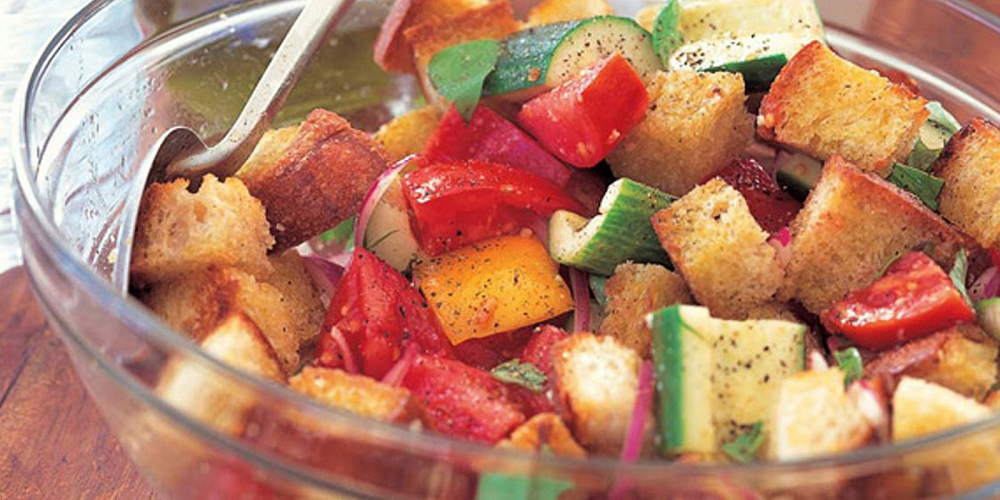

Panzanella Recipe

Description
This Panzanella recipe from Barefoot Contessa is a delicious combination of crispy bread and fresh ingredients like tomatoes, cucumbers, and bell peppers. It's a light and refreshing salad, perfect for a summer meal or a side dish at any gathering.
Ingredients
- 3 tablespoons good olive oil
- 1 small French bread or boule, cut into 1-inch cubes (6 cups)
- 1 teaspoon kosher salt
- 2 large, ripe tomatoes, cut into 1-inch cubes
- 1 hothouse cucumber, unpeeled, seeded, and sliced 1/2 inch thick
- 1 red bell pepper, seeded and cut into 1-inch cubes
- 1 yellow bell pepper, seeded and cut into 1-inch cubes
- 1/2 red onion, cut in half and thinly sliced
- 20 large basil leaves, coarsely chopped
- 3 tablespoons capers, drained
For the Vinaigrette:
- 1 teaspoon finely minced garlic
- 1/2 teaspoon Dijon mustard
- 3 tablespoons champagne vinegar
- 1/2 cup good olive oil
- 1/2 teaspoon kosher salt
- 1/4 teaspoon freshly ground black pepper
Steps
- Heat the olive oil in a large sauté pan. Add the bread and salt; cook over low to medium heat, tossing frequently, for 10 minutes, or until nicely browned. Add more oil as needed.
- For the vinaigrette, whisk together the garlic, Dijon mustard, champagne vinegar, olive oil, salt, and pepper.
- In a large bowl, mix the tomatoes, cucumber, red bell pepper, yellow bell pepper, red onion, basil, and capers.
- Add the bread cubes to the vegetables and toss with the vinaigrette.
- Season liberally with salt and pepper. Serve immediately, or allow the salad to sit for about 30 minutes for the flavors to blend.